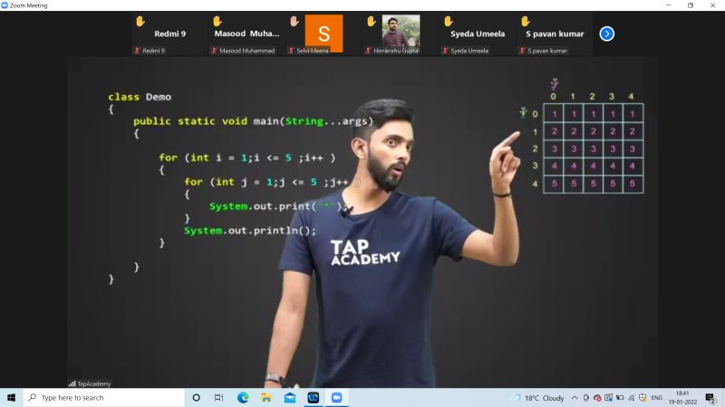

About Us
Welcome to our Java Full Stack Coaching program. We are passionate about equipping individuals with the skills to excel in the field of full stack development. Our program is designed to take you from a beginner to a confident full stack Java developer.
Our Courses
- Java Programming Fundamentals: A comprehensive introduction to Java, covering variables, control structures, and object-oriented concepts.
- Web Development with Java: Learn to build web applications using Java, including frameworks like Spring.
- Front-end Technologies: Dive into HTML, CSS, JavaScript, and popular libraries like React for creating dynamic and responsive user interfaces.
- Back-end Development: Master server-side development, handling databases, APIs, and more.
- Database Management: Understand database design, SQL, and NoSQL databases.
- Full Stack Projects: Apply your skills to real-world projects that mimic industry scenarios.
Why Choose Us
We are committed to your success with:

- Experienced Instructors: Our instructors are industry experts with a passion for teaching.
- Practical Learning: Gain hands-on experience through projects and labs.
- Job Placement Assistance: We help you connect with job opportunities upon course completion.
- Flexible Learning: Choose from online, in-person, or hybrid learning options.
- Community: Join a community of learners, collaborate, and network.
Testimonials
Watch Testimonials of Our Students
What our students say about us:
"I started with minimal coding experience, and now I'm a full stack developer, all thanks to this program!" - John D.
"The courses are well-structured, and the support from instructors is exceptional." - Sarah P.
Become a Full Stack Developer now !
Once you sign up with any of our courses you can access our video courses 24/7 along with Instructor support on Slack Channel
Register For The Course
Contact Us
If you have any questions or would like to enroll in our coaching program, please contact us at TapAcademy@gmail.com.